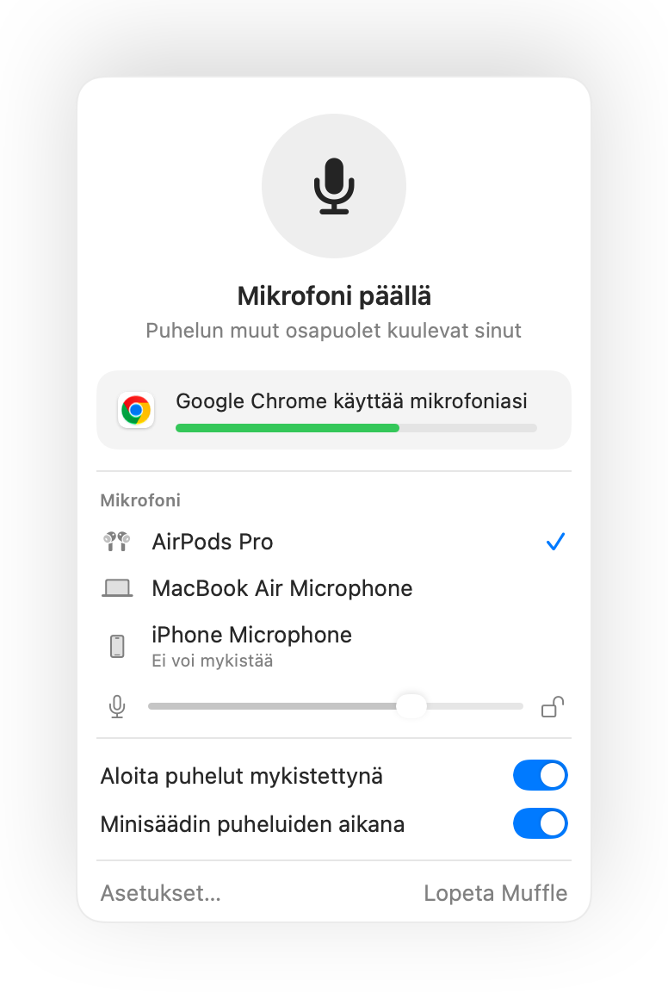

Miten mykistää mikrofoni Macilla
Macissa ei ole erillistä näppäintä mikrofonin mykistämiseen. Sovelluksesta ja tilanteesta riippuen käytettävissä on muutama vaihtoehto, joista vain osa toimii kaikkialla.
Kokeile Mufflea ilmaiseksi 3 päivän ajanTulossa pian Mac App Storeen
Vaihtoehdot
- Puhelusovelluksen oma painike tai pikanäppäin. Se toimii vain kyseisessä sovelluksessa ja vain silloin, kun sovellus on aktiivisena.
- Järjestelmäasetukset, Ääni, Äänen sisääntulo. Sisääntulotason vetäminen nollaan ei tarkoita todellista mykistystä kaikilla mikrofoneilla, ja sovellukset voivat nostaa sitä uudelleen.
- Globaali pikanäppäin Mufflen avulla. Yksi näppäin mykistää itse mikrofonin jokaisessa sovelluksessa.
- AirPods-kuulokkeet. Mufflen avulla varren painallus mykistää minkä tahansa puhelun, mukaan lukien Google Meetin Chromessa.

- Mufflen valikkorivikuvake muuttuu punaiseksi, kun mikrofoni on pois päältä, riippumatta siitä, missä sovelluksessa olet.
- Mufflen lopettaminen kytkee mikrofonin aina takaisin päälle.
Kysymyksiä ja vastauksia
Onko Macissa sisäänrakennettua mikrofonin mykistystä?
Ei järjestelmänlaajuista. macOS mykistää mikrofonin vain sitä tukevissa sovelluksissa. Muffle lisää todellisen järjestelmänlaajuisen mykistyksen.
Mykistääkö Mufflella mykistäminen jokaisen sovelluksen?
Kyllä. Muffle sammuttaa jokaisen mikrofonin laitteistotasolla, joten mikään sovellus ei kuule sinua ennen kuin poistat mykistyksen.